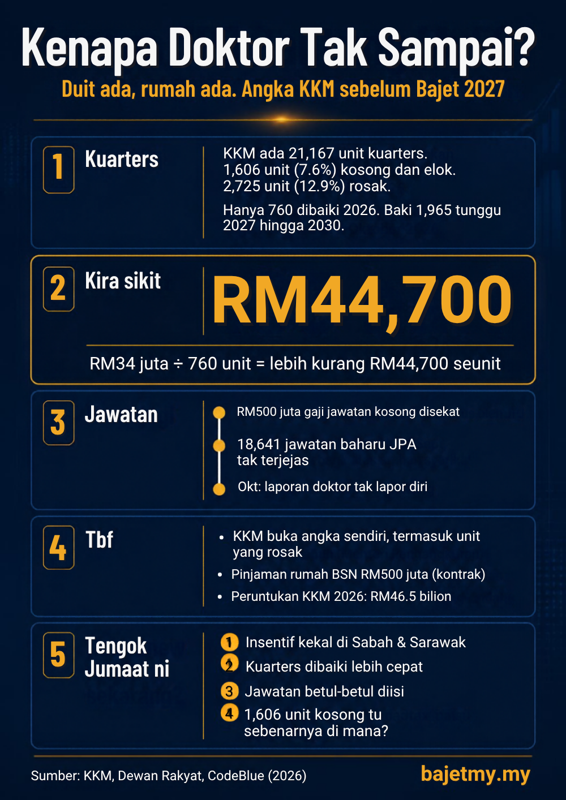

Bajet 2027 dibentangkan pada Jumaat, 9 Oktober 2026. Dua hari sebelum itu, Kementerian Kesihatan (KKM) berkongsi infografik tentang kuarters doktor dan jururawat serta peruntukan Belanjawan 2026. Bila angka-angka ini disusun bersama, ia menunjukkan satu perkara: masalah KKM mungkin bukan hanya soal berapa bilion yang diperuntukkan.

Fokus KKM untuk Bajet 2027
Menerusi laman libat urus Belanjawan 2027, KKM menyenaraikan empat bidang fokus:
- Akses perkhidmatan
- Kesesakan dan kos rawatan
- Tenaga kerja dan pencegahan penyakit
- Naik taraf fasiliti
Menteri Kesihatan Datuk Seri Dr Dzulkefly Ahmad pada Ogos berkata setiap peruntukan mesti berorientasikan hasil dan impak, bukan sekadar jumlah perbelanjaan.
Kuarters KKM: apa angka sebenar
Menurut infografik KKM (status sehingga Jun 2026):
| Status kuarters | Peratus | Bilangan unit |
|---|---|---|
| Sedang didiami | 79.5% | 16,836 |
| Kosong dan berkeadaan baik | 7.6% | 1,606 |
| Tidak sesuai didiami (rosak atau isu keselamatan) | 12.9% | 2,725 |
| Jumlah | 21,167 |
Pelan baik pulih di bawah RMK13 diperuntukkan RM100 juta:
- Fasa 1 (2026): RM34 juta untuk 760 unit
- Fasa 2 (2027 hingga 2030): baki 1,965 unit secara berfasa, mengikut keutamaan Jabatan Kesihatan Negeri
Kira sikit
- RM34 juta ÷ 760 unit = lebih kurang RM44,700 seunit
- 1,965 ÷ 2,725 = 72%, iaitu hampir 3 daripada 4 unit rosak perlu menunggu antara 2027 dan 2030
1,606 unit kosong, tapi di mana?
Ada 1,606 unit kuarters yang kosong dan dalam keadaan baik. Pada masa yang sama, Persatuan Perubatan Malaysia (MMA) masih meminta bantuan perumahan untuk doktor yang dihantar ke Malaysia Timur.
Infografik KKM tidak menyebut lokasi unit kosong tersebut. Mungkin ia berada di kawasan yang tidak memerlukan doktor tambahan. Tapi tanpa maklumat lokasi, sukar untuk menilai sama ada masalahnya kekurangan rumah, atau rumah yang ada tidak berada di tempat yang betul.
RM500 juta untuk jawatan yang tak terisi
Pada April 2026, Kementerian Kewangan mencadangkan pengurangan RM3.06 bilion perbelanjaan operasi KKM, sebahagian daripada langkah penjimatan susulan konflik Iran. Selepas rundingan, sekatan yang dimuktamadkan berjumlah RM500 juta.
Menurut Dzulkefly di Dewan Rakyat pada Julai, jumlah itu datang daripada baki peruntukan gaji untuk jawatan kosong yang belum diisi. Ia tidak menjejaskan operasi hospital, ubat-ubatan atau 18,641 jawatan baharu yang diluluskan JPA untuk KKM tahun ini.
Maksudnya, duit untuk gaji sudah ada, jawatan sudah ada, tetapi orang yang mengisinya tidak ada. Ini berlaku pada tahun yang sama ada hospital di Sabah dan Sarawak yang dilaporkan tidak menerima seorang pun doktor baru yang ditempatkan (laporan CodeBlue daripada hantaran doktor, bukan angka rasmi KKM).
Tbf: ada usaha
- KKM membuka angka sendiri, termasuk unit kuarters yang rosak.
- Ada kemudahan pinjaman rumah pertama BSN bernilai RM500 juta dan jaminan SJKP sehingga 120% untuk kakitangan kontrak KKM.
- Peruntukan KKM 2026 ialah RM46.5 bilion, naik daripada RM45.3 bilion pada 2025.
- Elaun perpindahan untuk doktor kontrak yang menerima lantikan tetap kini boleh dituntut, bermula kohort 2025.
Satu nota kecil: angka RM2.2 bilion dalam infografik KKM adalah untuk kuarters penjawat awam secara keseluruhan, bukan hanya kuarters KKM.
Apa yang perlu diperhatikan pada 9 Oktober
- Insentif yang membuatkan doktor dan jururawat sanggup pergi dan kekal di Sabah dan Sarawak, seperti elaun, laluan kerjaya dan perumahan.
- Sama ada pembaikan kuarters rosak dipercepatkan, bukan menunggu hingga 2030.
- Langkah untuk memastikan jawatan yang diluluskan betul-betul diisi.
Ringkasan
KKM mempunyai 21,167 unit kuarters, dengan 2,725 unit rosak dan 1,606 unit kosong dalam keadaan baik. Tahun ini, RM500 juta peruntukan gaji disekat kerana jawatan tidak terisi. Ukuran sebenar Bajet 2027 untuk KKM bukan hanya berapa bilion yang diperuntukkan, tetapi sama ada petugas kesihatan sanggup pergi dan kekal di tempat yang paling memerlukan.
Sumber
- Kementerian Kesihatan Malaysia: infografik Belanjawan 2026 dan Pengurusan & Penambahbaikan Kuarters KKM (Oktober 2026)
- Kementerian Kesihatan Malaysia: laman libat urus Belanjawan 2027 (SLU Bajet KKM 2027)
- The Sun: Budget 2027: MOH eyes services, resilience and justice (21 Ogos 2026)
- FMT: KKM akan bincang dengan MoF berhubung pelarasan perbelanjaan (30 April 2026)
- The Star dan Harapan Daily: pelarasan RM500 juta peruntukan KKM (2 hingga 3 Julai 2026)
- Bernama: Belanjawan 2026, peruntukan KKM naik kepada RM46.5 bilion (Oktober 2025)
- CodeBlue: kenyataan MMA tentang bantuan perpindahan dan perumahan (1 Oktober 2026)